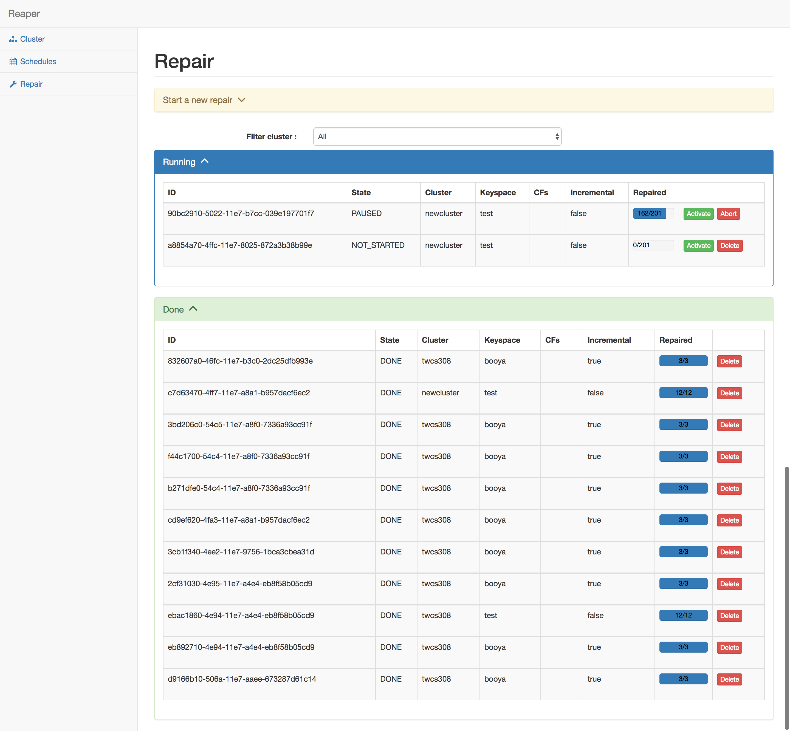
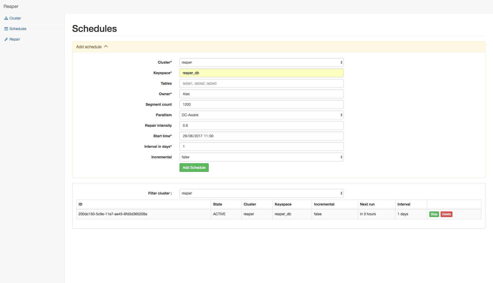
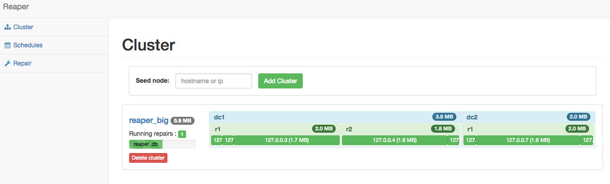

Automated Repairs for Apache Cassandra
- Simple web based UI
- Full and incremental support
- Supports all Cassandra versions

Easy Scheduling
- Set and forget
- No crontab required
- Automatically scales with your cluster

Quickly See Cluster Health
- Healthy nodes are green
- Downed nodes are red

Template by Bootstrapious. Ported to Hugo by DevCows